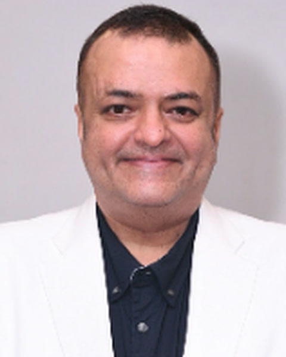

District Committee
The people leading District 3141 this Rotary year.
Executive Committee

Rajan Dua
District Governor
Anjali Deshmukh
District Governor Elect
RC Bombay Bandra
Vikram Rao
District Governor Nominee
RC Bombay Airport
Meera Kulkarni
Immediate Past District Governor
RC Bombay
Sanjay Mehta
District Secretary
RC Boisar-Tarapur
Kavita Iyer
District Treasurer
RC Bombay Bandra
Rohan Shah
District Joint Secretary
RC Vasai
Nisha Kapoor
District Joint Secretary
RC Virar
Club Service
4Arjun Nair
Director, Club Service
RC Bombay
Pooja Bhatt
Chair, Club Administration
RC Wada
Farhan Qureshi
Chair, Fellowship
RC Umroli
Leena Joshi
Chair, Club Training
RC Upper Kandivali
Community Service
5Deepak Pillai
Director, Community Service
RC Bombay Pier
Sunita Rane
Chair, Health Camps
RC Vasai
Imran Sheikh
Chair, Water and Sanitation
RC Boisar-Tarapur
Asha Menon
Chair, Environment
RC SkyCity Borivali
Gaurav Patil
Chair, Disaster Relief
RC Virar
Vocational Service
3Ritu Agarwal
Director, Vocational Service
RC Bombay Airport
Manish Gupta
Chair, Skill Development
RC Wada
Shalini Dsouza
Chair, Vocational Awards
RC Bombay Bandra
International Service
3Karan Malhotra
Director, International Service
RC Bombay
Neha Sawant
Chair, Global Grants
RC Upper Kandivali
Tariq Hussain
Chair, Youth Exchange
RC Umroli
New Generation Service
4Priya Venkatesh
Director, New Generation Service
RC SkyCity Borivali
Aditya Kamat
District Rotaract Representative
RC Vasai
Sneha Gokhale
Chair, Interact
RC Virar
Rahul Bhosale
Chair, RYLA
RC Boisar-Tarapur
The Rotary Foundation
3Harish Chandra
District Rotary Foundation Chair
RC Bombay Pier
Madhuri Jain
Chair, Annual Fund
RC Bombay Airport
Suresh Naik
Chair, Polio Plus
RC Wada
Membership and Public Image
3Anita Fernandes
Chair, Membership
RC Bombay Bandra
Vivek Chauhan
Chair, Public Image
RC Bombay
Rekha Pandit
Chair, Digital Media
RC Upper Kandivali
No committee member matches your search.